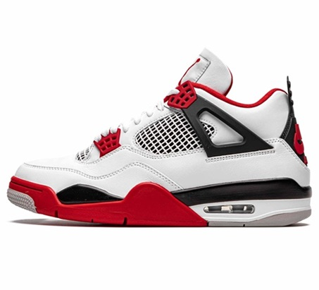

Air Jordan
They were designed for one of the greatest basketball players of all time, Michael Jordan, which gave them an instant celebrity endorsement. Secondly, the shoes were designed with both style and performance in mind, making them appealing to both athletes and fashion-conscious consumers.

Nike Dunk
Air Jordans are generally considered to be of good quality. They are known for their innovative designs, performance features, and attention to detail. Nike, the brand behind Air Jordans, invests in advanced materials and technologies to ensure durability and comfort.

Air Jordan Retro
Featuring premium materials and an eye-catching design, the Air Jordan 4 Retro upgrades one of Jordan's best-loved silhouettes. Premium leather, synthetic and textile upper adds a stylish finish to classic durability. Visible Nike Air in the heel is paired with an encapsulated forefoot unit for responsive cushioning.

Nike Air Zoom
A rubber outsole has a durable design built for mileage. A lateral crash rail combines with forefoot flex grooves for a tough, flexible design that feels smooth when transitioning from heel to toe. Updated collar lining provides a softer, more durable feel while keeping your sock from bunching up when you run.